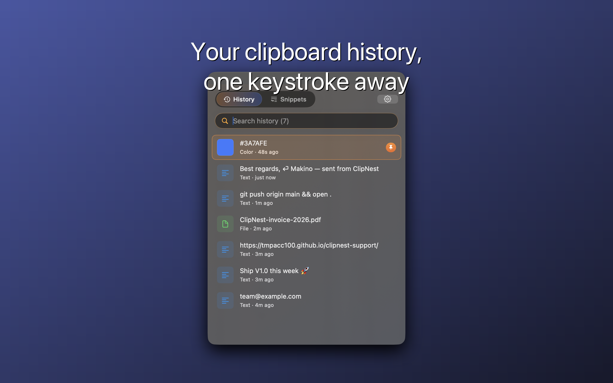
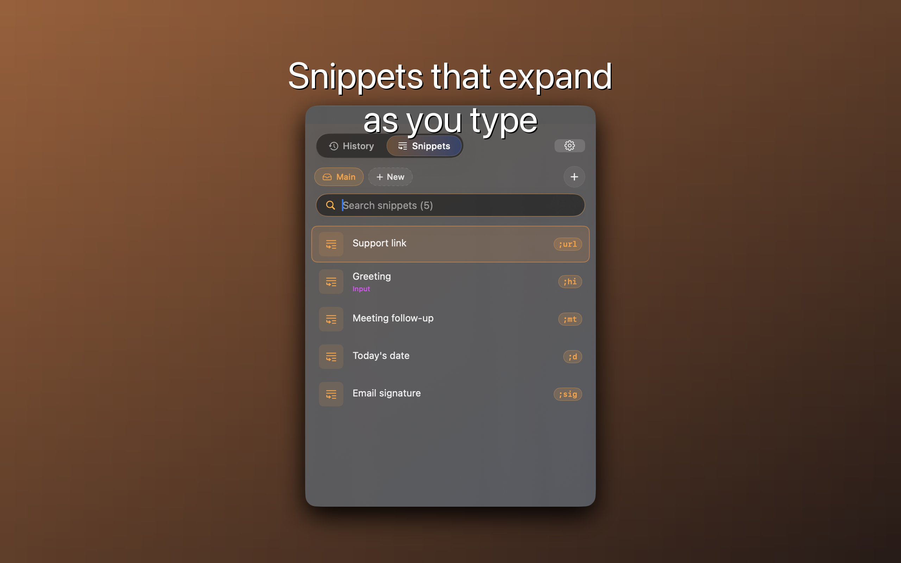

Clipboard history and snippets, local on your Mac.
ClipNest remembers copied text, images, file paths, and colors, then turns short triggers like ;sig into full snippets. No account, no subscription, no network access.
Available on the Mac App Store.


Highlights
Clipboard historyUp to 2,000 entries with fuzzy search, pins, and menu bar access.
Snippet expansionOrganize reusable templates and expand triggers from any app.
Privacy firstNo network entitlement. Clipboard history physically stays on your Mac.